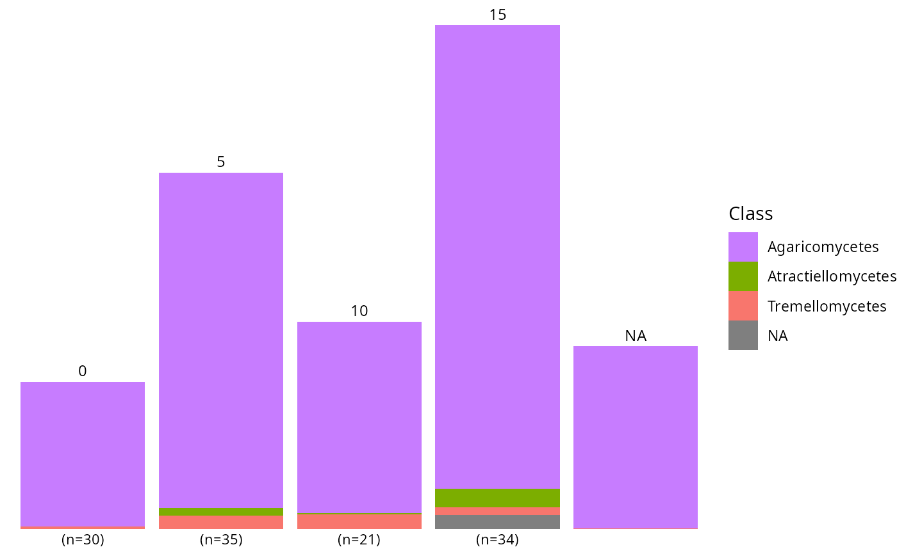
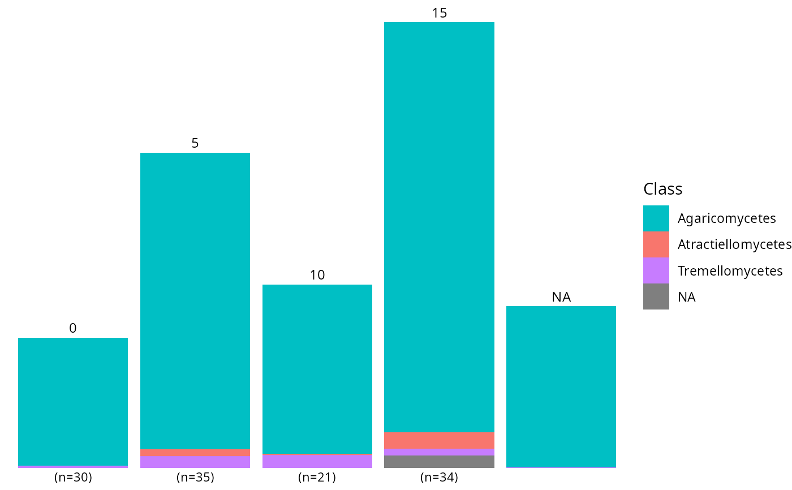
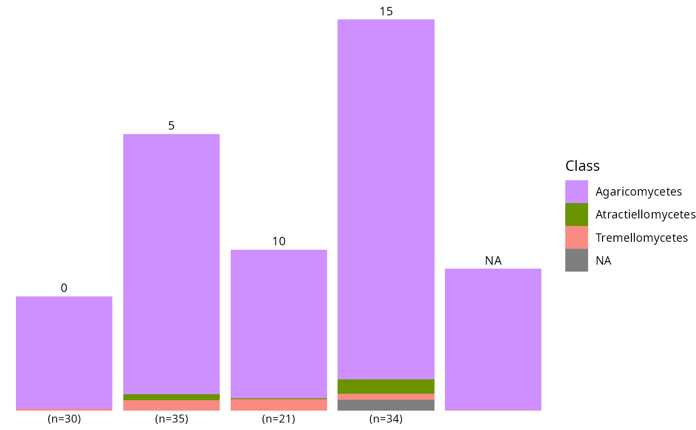

Reorder fill and color scales to maximize perceptual contrast between adjacent segments
Source:R/reorder_distinct_colors.R
reorder_distinct_colors.Rd
In stacked bar plots, ggplot2's default discrete palette assigns colors
using level ordered (sometimes alphabetically), which often places perceptually
similar colors next to
each other. This function reassigns the same set of colors to factor
levels so that visually adjacent segments receive maximally different
colors. Both the fill and color scales are updated so that direct
labels (e.g. from label_taxa = TRUE) stay in sync with the bars.
Migrated from MiscMetabar::reorder_distinct_colors() and its
ggplot_add S3 method.
Usage
reorder_distinct_colors(
p = NULL,
alternate_lightness = FALSE,
lightness_amount = 0.15,
colorblind = FALSE
)Arguments
- p
A ggplot object that uses a discrete fill aesthetic. Can be omitted when using the
+operator (e.g.p + reorder_distinct_colors()).- alternate_lightness
(logical, default FALSE) If TRUE, darken every other level to add a luminance alternation cue on top of hue differences.
- lightness_amount
(numeric, default 0.15) Intensity of the lightness alternation (proportion to darken). Only used when
alternate_lightness = TRUE.- colorblind
(logical, default FALSE) If TRUE, compute perceptual distances under simulated deuteranopia so that the reordering optimizes contrast for colorblind viewers.
Value
A new ggplot object with ggplot2::scale_fill_manual() and
(if a color scale is present) ggplot2::scale_color_manual()
replacing the original scales. When p is omitted, returns an
object that can be added to a ggplot with +.
Examples
# \donttest{
data(data_fungi_mini, package = "MiscMetabar")
p <- MiscMetabar::tax_bar_pq(data_fungi_mini, taxa = "Class", fact = "Time")
reorder_distinct_colors(p)

reorder_distinct_colors(p, colorblind = TRUE)

p + reorder_distinct_colors(alternate_lightness = TRUE)

# }